DGA1020-SEM2-A-2223: Applied Software Practices
CW3 Practical Exercise 3D
The creative influence:
- The initial idea was to create an ineteresting bowl with an unusual shape.I drew inspiration from clay hand made pottery, which allows its creators to move away from boring standard shapes. In this case, I decided upon a cat shaped bowl with all four linbs and additional holes on either side of the bowl for more confortable holding.
- As for the fruit, I have chosen a relative colour palette and thefore wnted to include the following fruit:
- Dragonfruit
- Apples (both green and red)
- Strawberries
- Watermelon slice
The process
- Unfortunately, I have encountered a lot of issues during my working process, most notably the following two steps:
- Added a lot of subdivision surface
- Proceeded to apply the subdivision surface, in some cases a few times per object
Upon consulting the teacher, I was told that in usual 3D practiced, the subdivision surface is never to be applied during the modeling process, as it will come in handy ONLY during the rendering process
Nevertheless, despite all of the diffficulties I faced houghout this project, I was able to create a satisfactory.
LINKS
To finish off the exercise, we were required to record a 360 degrees rotation of the bowl. I was able to complete this animation by watching the following video